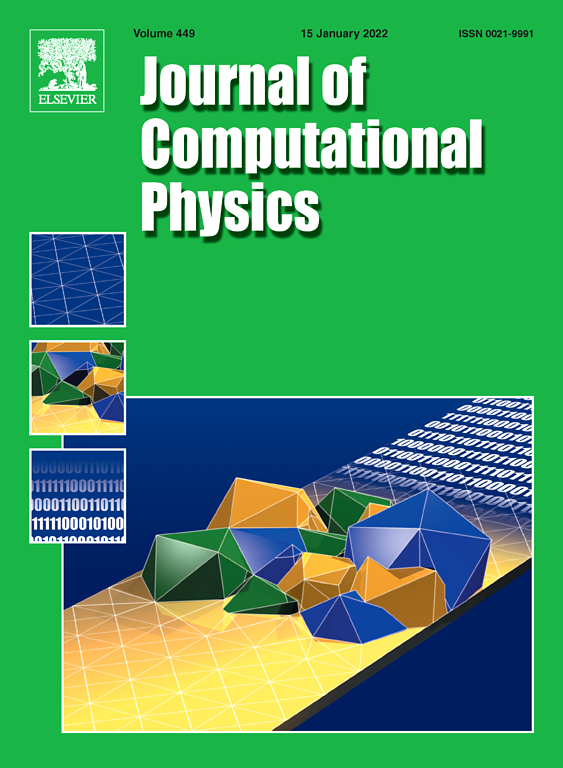
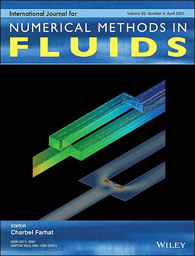
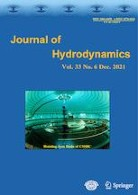
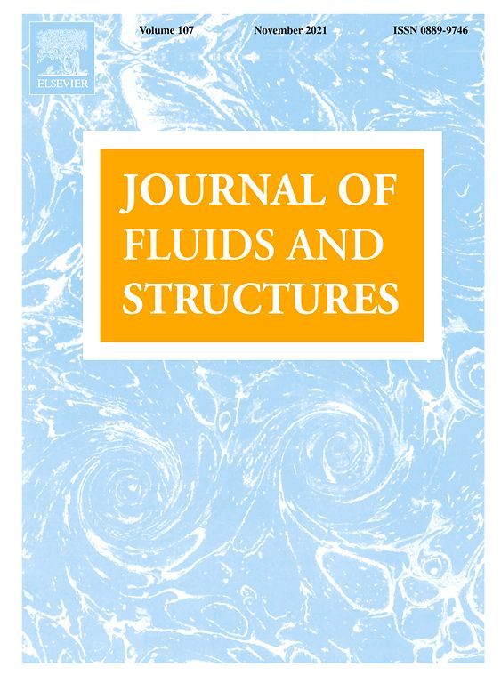
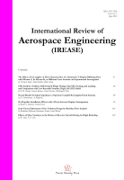
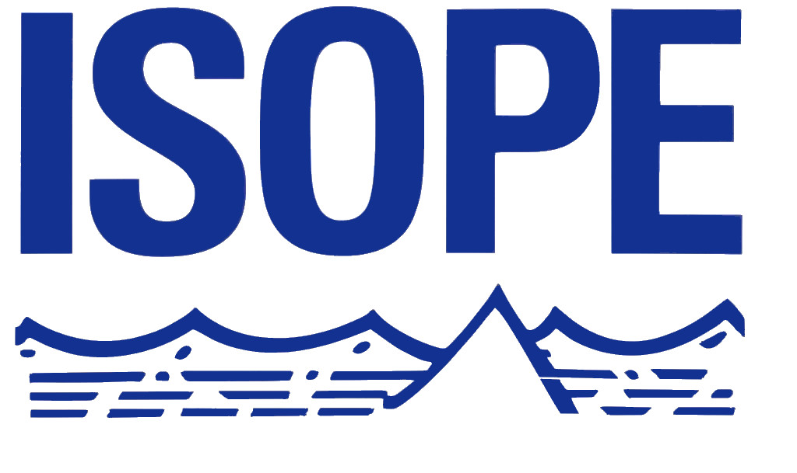
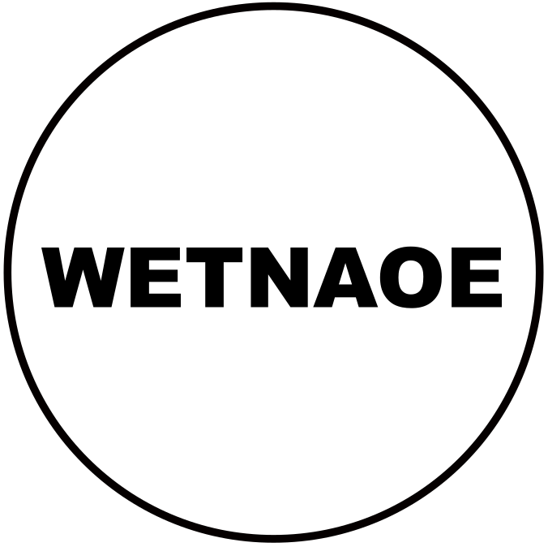

-

A high order flux reconstruction interface capturing method with a phase field preconditioning procedure
Journal of Computational Physics (2021)
Jabir Al-Salami, Mohamed M Kamra, Changhong Hu
-

Magnetic induction and electric potential smoothed particle magnetohydrodynamics for incompressible
International Journal for Numerical Methods in Fluids (2020)
Jabir Al-Salami, Changhong Hu , Mohamed M Kamra, Kazuaki Hanada
-

An unstructured mesh method for numerical simulation of violent sloshing flows
Journal of Hydrodynamics (2020)
Changhong Hu, Mohamed M Kamra
-

Experimental study of the interaction of dambreak with a vertical cylinder
Journal of Computational Physics (2019)
Mohamed M Kamra, Jabir Al-Salami, Makoto Sueyoshi, Changhong Hu
-
Numerical and experimental investigation of three-dimensionality in the dam-break flow against a vertical
wallJournal of Hydrodynamics (2019)
Jabir Al-Salami, Mohamed M Kamra, Changhong Hu
-

Modeling, System Identification, and PID-A Controller for Tethered Unmanned Quad-Rotor Helicopter.
International Review of Aerospace Engineering (2017)
Tarek Dief, Mohamed M. Kamra, and Shigeo Yoshida
-
High-order flux reconstruction method for the hyperbolic formulation of the incompressible Navier-Stokes
equations on unstructured gridsarXiv (2021)
Mohamed M Kamra, Jabir Al-Salami, Changhong Hu

-
A High Order Flux Reconstruction Interface Tracking Method Using Preconditioned Phase Field
arXiv (2020)
Jabir Al-Salami, Mohamed M Kamra, Changhong Hu
-
Numerical and Experimental Investigation of Dam-Break Flow Against a Vertical Cylinder
JASNAOE 2021, JAPAN, ONLINE
Jabir Al-Salami, Mohamed M Kamra, Changhong Hu
-
Numerical Simulation of Two Tidal Turbines with Free-Surface Effect
JASNAOE 2021, JAPAN, ONLINE
Jabir Al-Salami, Changhong Hu , Mohamed M Kamra, Kazuaki Hanada
-

CFD Simulation of Leaked Gas Dispersion for a LNG Powered Ship
ISOPE 2020, Shanghai, CHINA
Changhong Hu, Mohamed M Kamra
-
Numerical study of sloshing motion on unstructured mesh using UMTHINC
IWSH 2019, Hamburg, GERMANY
Jabir Al-Salami, Mohamed M Kamra, Changhong Hu
-

On the Reliability of Dam-Break Experiments.
WETNAOE 2018, Hiroshima, JAPAN
Jabir Al-Salami, Mohamed M Kamra, Changhong Hu
-
Numerical Simulation of Free Surface Impact on a Vertical Cylinder Using UMTHINC
ISOPE 2017, San Francisco, USA
Jabir Al-Salami, Mohamed M Kamra, Changhong Hu
-
Three-Dimensionality in Dam-Breaking Flows
WETNAOE 2017, Hiroshima, JAPAN
Jabir Al-Salami, Mohamed M Kamra, Changhong Hu
-
Scalable Muti-GPU tridiagonal solver based on Schur-Complement Algorithm
ParCFD 2016, Kobe, JAPAN
Jabir Al-Salami, Mohamed M Kamra, Changhong Hu